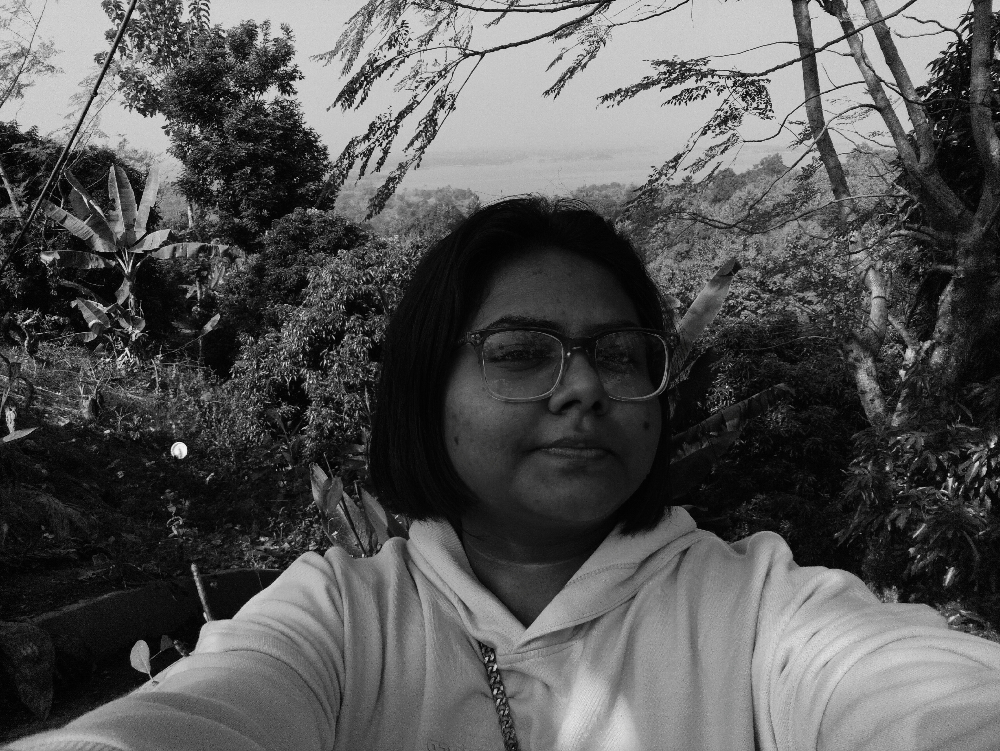

Hello, I am Rushmila, a final year CSE undergrad at North South University.
I am interested in molecular computing and synthetic circuit design, which I study as part of the Systems and Networks Reading Group. I am supervised by Dr. Md. Shahriar Karim.
I write poems and book reviews. My leisure is spent watching movies and sometimes reviewing them on Letterboxd. My current favourite read is Taipei by Tao Lin. I also enjoy making embroidery! I used to draw once upon a time.
Email me here: rushmila [dot] khan [dot] 232 [at] northsouth.edu